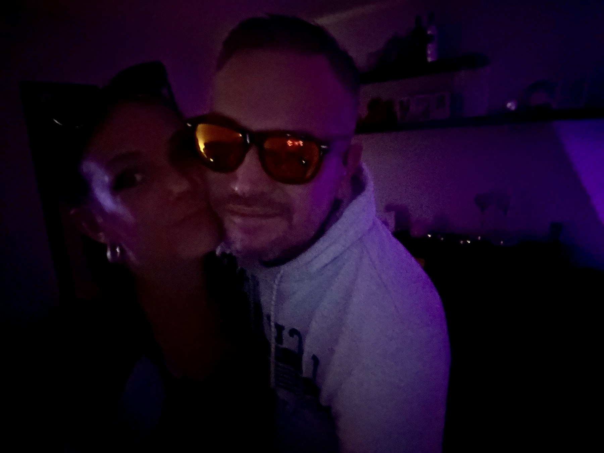
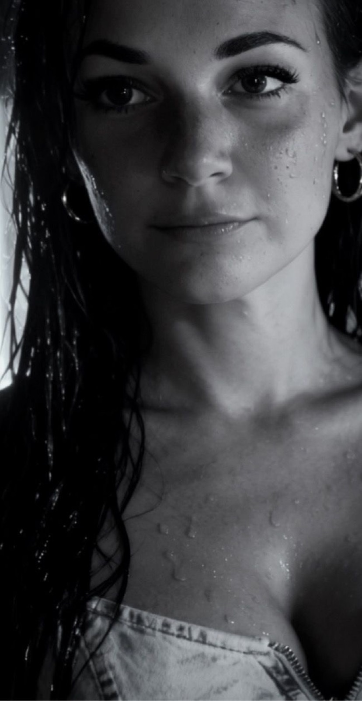
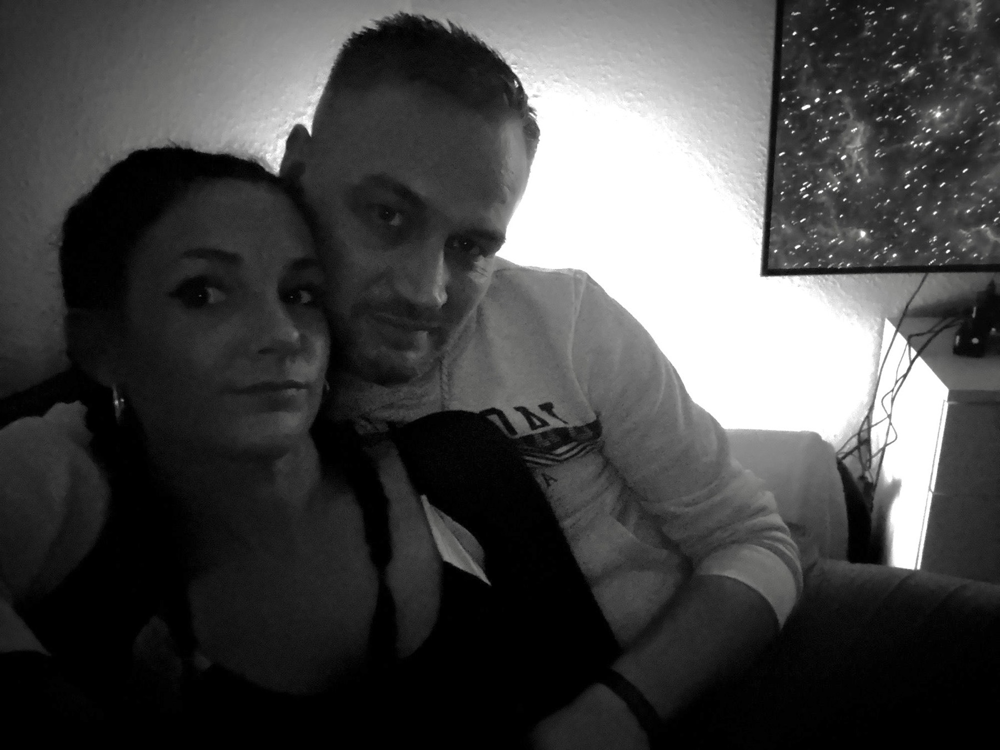
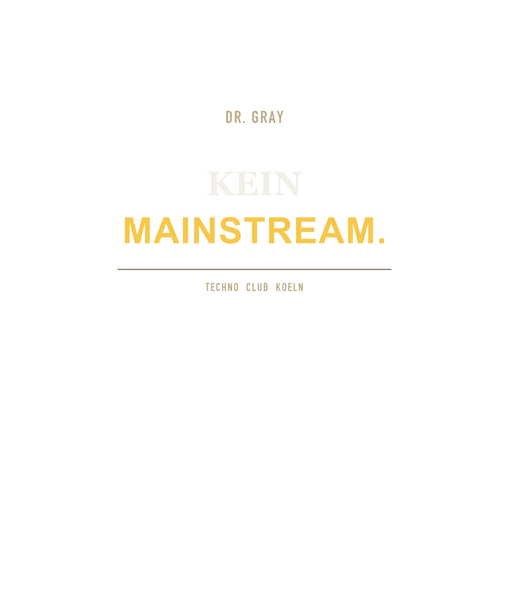
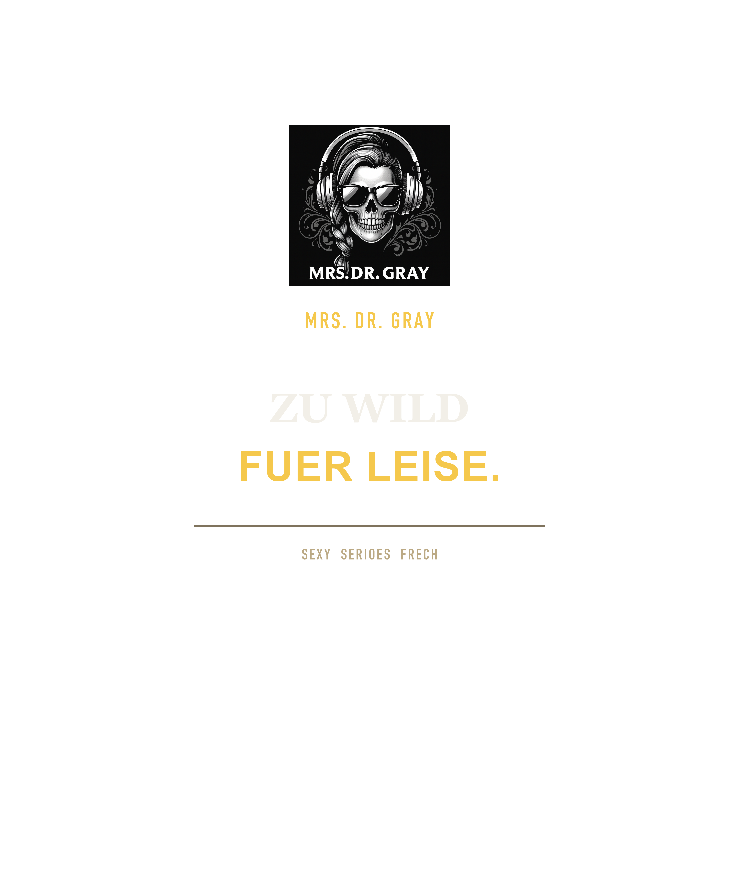
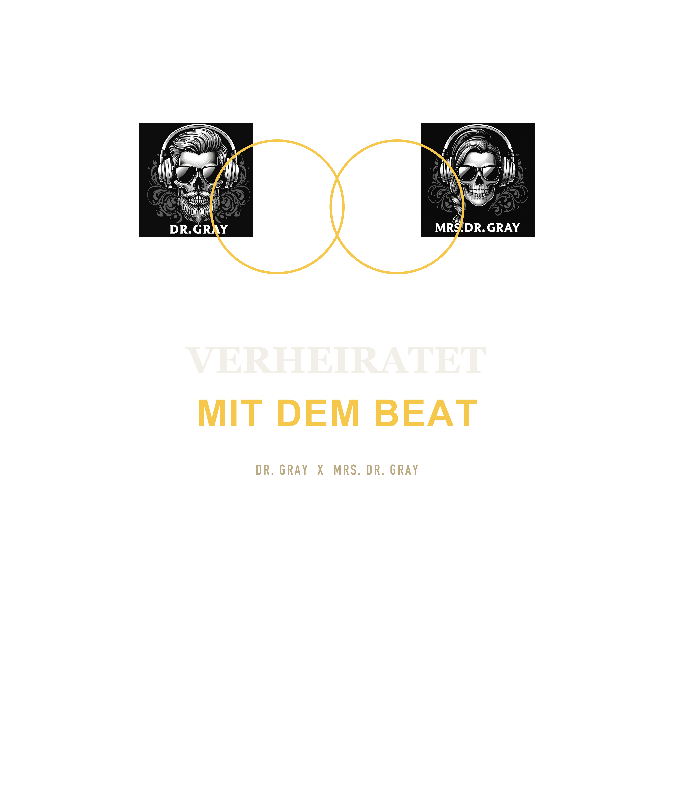
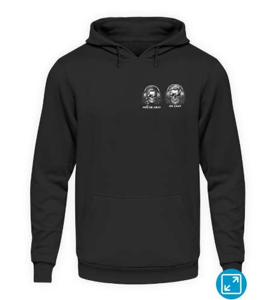
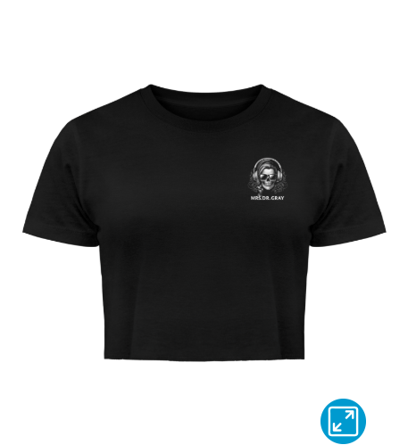

Music first. Merch als Extension.
Unsere Hauptsache bleibt Musik, Sets und Community. Der Shop ist eine kuratierte Nebenlinie: klare Kategorien, echte Produkte und direkter Weg vom Look in den Shirtee-Store.
Shop Startseite
So wirkt die Seite wie ein klarer Store: nach Kategorien sortiert, visuell geordnet und ohne interne Upload-Infos.
- Hauptfokus der Website bleibt Musik, Live-Sets und Releases.
- Merch wird als eigener Shop-Bereich angeboten, ohne die Musik-Story zu ueberlagern.
- Jede Produktkarte fuehrt direkt und klar zum Kaufpfad.
Nutze die Kategorien fuer schnelles Browsen und gehe dann direkt in den Shirtee-Checkout. So bleibt die Experience einfach wie in einem echten Online-Shop.
- Kategorien: Herren, Damen, Couple, Unisex, Accessoires
- Produktauswahl: 0 Artikeltypen
- Kaufweg: Produktkarte → Shirtee Store
Aktuell 0 auswaehlbare Artikeltypen
Diese Auswahl wird automatisch aus dem Katalog gezogen und bleibt als saubere Shop-Orientierung sichtbar.
Visual Dropline
Unsere Shop-Linie lebt nicht nur von Produkt-Mockups, sondern von echten Bildern aus unserem aktuellen Batch: Couple-Energie, Mrs.-Fokus und Club-Atmosphaere als Basis fuer kommende Drops.
Keine Gesichter auf Kleidungsprints. Unsere Pieces laufen ueber freche Claims, Logo-Kompositionen und starke Outfit-Visuals. Portraets bleiben nur Stil- und Mood-Elemente auf der Website, nicht auf dem Produktdruck.

Couple als Kern
Die Couple-Linie bleibt emotional und szenig zugleich: Nähe, Symmetrie, Haltung statt Kitsch.

Mrs. Dr. Gray sichtbar vorn
Für Damen-Drops führt Mrs. Dr. Gray klar als Hauptfigur: selbstbewusst, präzise und clubnah.

Duo mit Echtheit
Diese Linie verbindet Studio, Live und Alltag. Genau daraus entstehen Claims, die auch auf Merch funktionieren.
Shop Kategorien
Klar gegliedert wie ein echter Store: jede Linie hat ihren Stil, ihre Produkte und ihren direkten Kaufweg.

Maenner-Kollektion
Direkter, roher und frecher. Vorne sitzt ein klarer Claim, hinten optional das Dr.-Gray-Hauptlogo. Keine Ueberlagerungen, keine Doppellogos, keine Grafik-Spielerei ohne Aussage.

Damen-Kollektion
Cleaner, praeziser und selbstbewusst. In der Damen-Kollektion fuehrt Mrs. Dr. Gray sichtbar: mit weiblicher Staerke, sexy-serioesen Hooks und Looks, die nach Club, Couple und Charakter aussehen.

Couple Edition
Beide Logos setzen wir nur in der Couple Edition gemeinsam ein. Dann aber auf gemeinsamer Hoehe, mit echter Symmetrie und mit Spruechen, die Beziehung und Szene zugleich tragen.
Store Highlights fuer deinen Einstieg
Wie in einem echten Shop: zuerst starke Einstiege, dann gezielt nach Kategorie und Stil filtern.
Meistgeklickte Essentials
Unsere meist nachgefragten Pieces fuer schnellen Einstieg in die Merch-Linie.
Aktuelle Neuzugaenge
Frische Styles aus den neuesten Katalog-Erweiterungen.
Shop Finder filtern & suchen
Finde schneller die passenden Teile: Kategorie waehlen, Begriff eingeben, direkt zum Produkt gehen.
Alle Artikel sichtbar.
Sortiment fuer Herren
Die Herren-Linie bleibt hart, klar und technischer. Mehr Druck, weniger Dekoration, klarere Achsen, staerkere Frontclaims und nur Motive, die auf dunklen Artikeln wirklich funktionieren.
Hoodies, Shirts, Longsleeves, Polos, Hemden, Tanks und dunklere Layer. Mehr Dr.-Gray-Druck, weniger Deko, null Ueberlagerung und immer ein klar lesbarer Vorder- oder Rueckenmoment.
Sortiment fuer Damen
In der Damen-Linie bleibt Mrs. Dr. Gray der optische Hauptanker. Wir kombinieren ihr Logo mit Hooks, die weiblich, frech, serioes und klar an eurem Profil als Duo ausgerichtet sind.
Crops, Hoodies, Kleider, Polos, Longsleeves und Event-Looks. Das Mrs.-Dr.-Gray-Logo fuehrt, die Statements bleiben clubbig, selbstbewusst und so gesetzt, dass Figur und Wirkung nicht verloren gehen.
Couple & Unisex
Beide Logos zusammen nutzen wir nur dann, wenn die Komposition wirklich dafuer gebaut ist. Couple darf emotional sein, Unisex bleibt vorn kompakt und hinten wahlweise Dr. Gray oder Mrs. Dr. Gray.
Couple-Stuecke bekommen echte Symmetrie, Story und Beziehungsspannung. Unisex bleibt modular und laesst Raum fuer Rueckenwahl, Sweatshirts, Polos und cleanere Everyday-Pieces.
Erste 9 Produkte
Die nächste Serie folgt jetzt festen Regeln: gleiche Logo-Höhen, kontrollierte Druckflächen, saubere Symmetrie und eine klare Trennung zwischen Dr.-Gray-, Mrs.-Dr.-Gray- und Couple-Linie.
Treibend. Roh. Ehrlich.
Die harte Männer-Linie für Oversize Shirt und Hoodie. Vorne nur Claim und Techno-Linie, hinten wahlweise das Dr.-Gray-Hauptlogo.
Kein Mainstream.
Provokant und sauber gesetzt. Ein Frontprint für Leute, die kein Interesse an glattgebügeltem Festival-Merch haben.
Bass im Blut.
Mehr Druck, mehr Bewegung, aber immer noch drucktauglich. Funktioniert stark auf Shirt, Sleeveless und Backprint-Ideen.
Mrs. Dr. Gray
Das Signature-Stück der Damen-Linie. Elegant, präzise und mit dem Mrs.-Dr.-Gray-Logo als Hauptzeichen.
Zu wild fuer leise.
Frecher, selbstbewusster und klar für die Szene gebaut. Funktioniert auf Crop, Kleid und femininen Fits deutlich besser als auf überladenen Unisex-Fronts.
Liebe lauter.
Weicher im Ton, aber nicht weichgespuelt. Herz- und Linienmotiv bleiben visuell sauber auf dunklen Artikeln.
Couple in Love mit dem Beat
Das persönlichste Couple-Motiv im Drop. Beide Logos bleiben auf derselben Höhe und wirken nur hier gemeinsam als Emblem.
Two Hearts One Rhythm
Die internationale Couple-Variante. Melodischer, cleaner und genau richtig fuer Duo-Fits oder weichere Story-Drops.
His Beat Her Vibe
Als zweiteiliges Pair-Set gedacht. Mehr Attitude als Kitsch und damit ideal fuer eine echte Couple Edition.
Accessoires & Special Merch
Alles, was als Shirtee-POD oder als spaeterer Sonderdrop fuer unsere Linie Sinn ergibt: Taschen, Caps, Beanies, Tassen und limitierte Special Pieces wie Feuerzeuge oder Sonnenbrillen.
Caps, Taschen, Beanies, Phone Cases, Poster und kleinere Geschenkartikel fuer Community, Alltag und Event-Bundles. Special Merch bleibt bewusst als externe Limited-Linie markiert.
Featured im Store
Direkt kaufbare Highlights fuer schnelle Entscheidungen.

Mrs. Dr. Gray Unisex Hoodie
Starker Layer fuer kalte Naechte, TikTok-Lives und den ersten cleanen Signature-Fit.

Mrs. Dr. Gray Crop Shirt
Leichtes Statement-Piece fuer Festival, Club und sommerliche Daytime-Slots.
Upload-Workflow
Für maximale Effizienz läuft jedes Motiv gleich: Idee, Claim, Produktlinie, Front-/Backprint-Logik, Freigabe und erst dann Upload in Shirtee.
- Kollektion auswählen
- Front und Back getrennt festziehen
- Nur ein Hauptlogo je Designlinie nutzen
- Freigabe vor jedem Upload
Design-Regeln
Unisex bedeutet vorne clean und hinten waehlbares Backlogo. Mrs. Dr. Gray bleibt die feminine Hauptlinie. Dr. Gray bleibt Techno, klar, hart und grafisch sauber. Beide Logos zusammen gehoeren nur in Couple-Designs. Special Merch wie Feuerzeuge oder Sonnenbrillen kennzeichnen wir bewusst als externe oder limitierte Produktschiene.
Erste Spruch- und Motivrichtungen
Diese Linien passen zum Auftritt und lassen sich sowohl als TikTok-Hooks als auch als Shirt-Statements weiterbauen.
Techno mit Herz
Der stärkste Dach-Claim. Elegant, klar und direkt mit der Marke verbunden.
Couple in Love mit dem Beat
Perfekt für Couple- und Duo-Merch mit Wiedererkennungswert und Story-Fit.
Treibend. Roh. Ehrlich.
Die härtere Szene-Linie für Leute, die eher Underground als brav wollen.
Wie die Website jetzt mitzieht
Neue Artikel werden nicht mehr nur als Text im Shop verstreut gepflegt. Die Sortimentskarten kommen jetzt aus einem gemeinsamen Merch-Katalog und koennen dadurch auf Startseite und Shop konsistent erweitert werden.
Was wir als Naechstes anlegen
Die Prioritaet liegt auf einer staerkeren Herren-Linie, mehreren Damen-Pieces inklusive Kleider, einer ausgebauten Couple Edition und anschliessend Accessoires, die in Shirtee oder als Special Drop umgesetzt werden.
Musik bleibt Mittelpunkt
Der Shop unterstuetzt die Story rund um Sets, Releases und Live-Momente. Merch bleibt bewusst zweite Linie, damit eure musikalische Identitaet immer vorne steht.
Shop als klare Nebenbuehne
Durch Kategorien, Filter und direkten Kaufweg funktioniert die Merch-Seite wie ein Store, ohne den Fokus eurer Website von Musik auf reinen Verkauf zu verschieben.